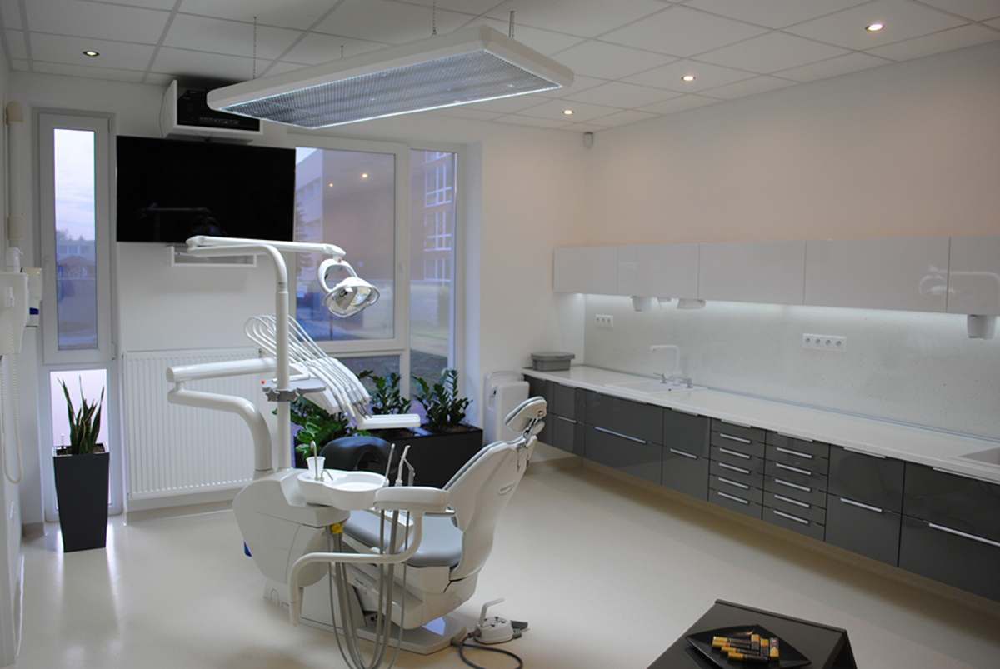
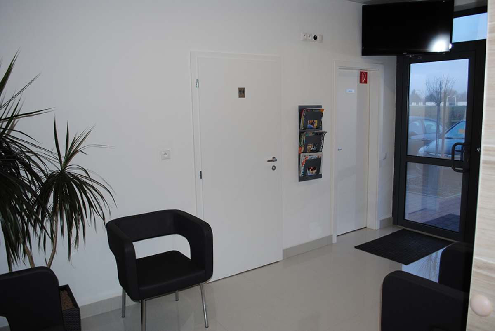
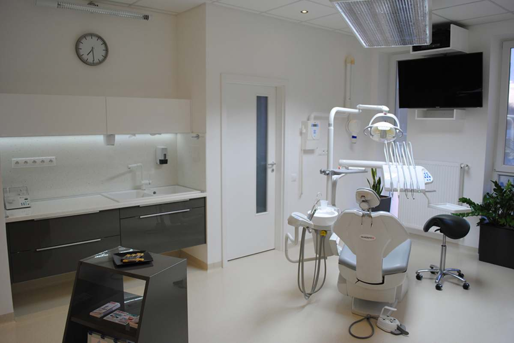
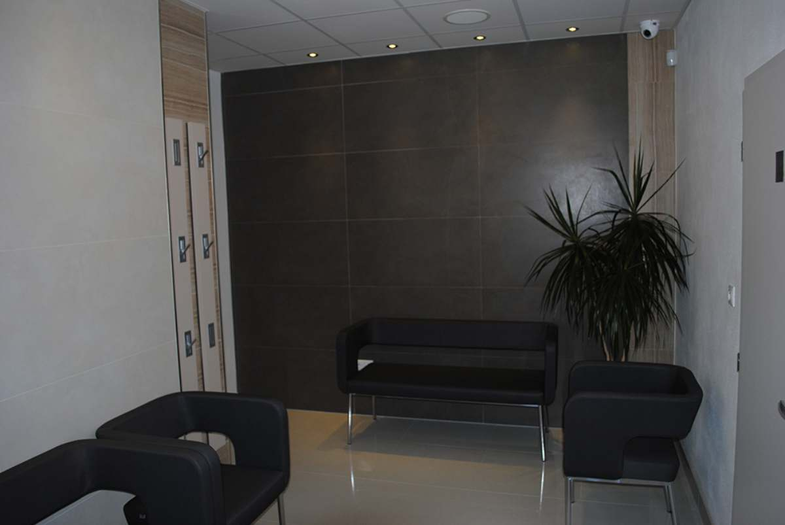
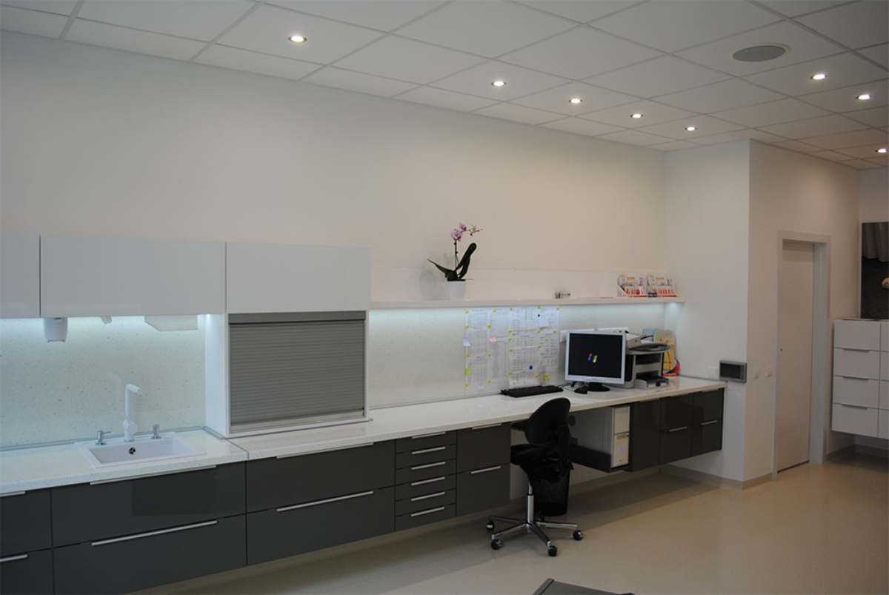
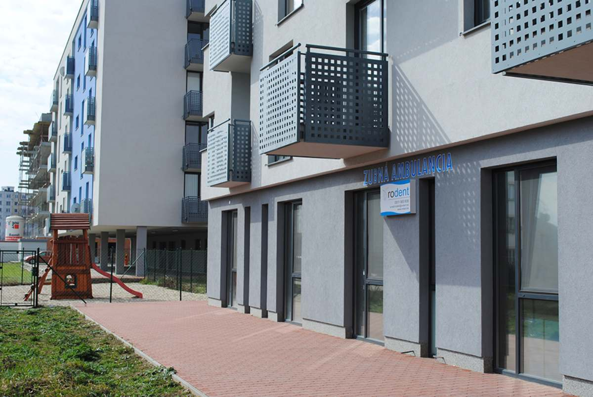

Moderná starostlivosť o váš zdravý úsmev
Komplexná stomatologická starostlivosť pre deti aj dospelých – od prevencie a dentálnej hygieny až po protetiku, endodonciu a 3D rádiodiagnostiku.

- 2009ordinujeme od roku
- 8oblastí ošetrenia pod jednou strechou
- 3zmluvné poisťovne
- 7:30ordinujeme Po – Pi od 7:30 do 16:00
Kompletná stomatológia pod jednou strechou
Od vstupnej prehliadky a liečebného plánu až po chirurgické a protetické ošetrenie – bez posielania k iným pracoviskám.
-
01
Komplexné vyšetrenia
Vstupné a preventívne prehliadky pre deti a dospelých, vypracovanie liečebného plánu, digitálne RTG vyšetrenie a spolupráca s čeľustným ortopédom.
-
02
Konzervatívne ošetrenie
Diagnostika zubného kazu, ošetrenie v lokálnej anestézii, kompozitné a amalgámové výplne, estetické inlay, onlay a fazety.
-
03
Endodoncia
Ošetrenie koreňových kanálikov s apexlokátorom a RVG prístrojom, moderná preparácia M-TWO a tepelné plnenie BEEfil.
-
04
Protetická stomatológia
Fixné náhrady zo zirkónoxidu CERCON, porcelánu či kovokeramiky, snímateľné náhrady aj bez háčikov a protetické riešenia na implantáty.
-
05
Parodontológia
Diagnostika a liečba ochorení ďasien, mikrobiologická diagnostika, kyretáž parodontálnych vačkov a chirurgická liečba.
-
06
Orálna chirurgia
Resekcie koreňov, chirurgické extrakcie, plastiky čeľustných hrebeňov a mäkkých tkanív, ošetrenie úrazov zubov a čeľustných kostí.
-
07
Dentálna hygiena a bielenie
Odstránenie povlakov a zubného kameňa ultrazvukom, air-flow pieskovanie, leštenie, nácvik domácej hygieny, ambulantné aj vnútorné bielenie zubov.
-
08
Rádiodiagnostika 3D (CBCT)
Intraorálne a bite-wingové snímky, OPG a 3D CBCT snímkovanie pre presnú diagnostiku a plánovanie ošetrenia.

Starostlivosť od najmenších až po seniorov
Bezbolestné ošetrenie
Šetrné postupy a možnosť ošetrenia v lokálnej anestézii pri každom zákroku.
Účinná prevencia
Pravidelné prehliadky a dentálna hygiena, ktoré predchádzajú náročnejším zákrokom.
Všetko na jednom mieste
Diagnostika, ošetrenie, hygiena aj protetika v jednej ambulancii.
Ústretové hodiny
Ordinujeme každý pracovný deň od 7:30 do 16:00, termín si dohodnete telefonicky.
Záruka. Na navrhované varianty liečebného plánu poskytujeme záruku. Je podmienená pravidelnou dochádzkou na dentálnu hygienu a preventívne prehliadky podľa odporúčania a dodržiavaním zásad starostlivosti o chrup.
Technológie, ktoré cítite pri ošetrení
Neustále investujeme do najnovších technológií, postupov a materiálov, ktoré môžeme spätne poskytnúť našim pacientom.
- 013D CBCT snímkovaniepresná 3D diagnostika čeľuste
- 02Digitálne RVG a OPGnižšia záťaž, okamžitý výsledok
- 03Apexlokátorpresné určenie hrotu koreňa
- 04Preparácia M-TWOmoderné strojové ošetrenie kanálikov
- 05Tepelné plnenie BEEfilkvalitné uzavretie kanálika
- 06Ultrazvuk a air-flowšetrná dentálna hygiena
- 07CERCON zirkónoxidestetické fixné náhrady
- 08Bielenie Beyondambulantné bielenie svetlom
Kto sa o vás postará
MUDr. Cornel Toma Vancu
StomatológĽubica Adamcová
Dentálna hygienička
Ceny vybraných výkonov
Cenník platný od 1. 7. 2026. Doplatky sa účtujú ako rozdiel medzi cenou výkonu a cenou hradenou zdravotnou poisťovňou pri použití nadštandardných materiálov a postupov.
Celý cenník- Preventívna prehliadka35,00 €
- Odborná konzultácia30,00 €
- Intraorálna snímka (digitálne RVG)15,00 €
- 3D OPG snímka60,00 €
- Fotokompozitná výplň (1-plôšková)70,00 €
- Endodontické ošetrenie – 1 koreňový kanálik100,00 €
- Odstránenie zubného kameňa UZV – zuboradie120,00 €
- Vonkajšie bielenie zubov Beyond – zuboradie300,00 €
Svetlé priestory na Hodskej 97
Presvetlené ordinácie, moderné vybavenie a útulná čakáreň priamo v Galante.




Termín si dohodnete telefonicky
+421 911 98 39 38- Mobil+421 903 53 63 73
- E-mailrodent@rodent.sk
- AdresaRO-DENT s.r.o., Hodská 97, 924 01 Galanta
Ordinačné hodiny
- Pondelok
- 7:30 – 16:00
- Utorok
- 7:30 – 16:00
- Streda
- 7:30 – 16:00
- Štvrtok
- 7:30 – 16:00
- Piatok
- 7:30 – 16:00
- Obedná prestávka
- 12:00 – 13:00
- Sobota
- zatvorené
- Nedeľa
- zatvorené
Potrebujete termín čo najskôr?
Zavolajte nám počas ordinačných hodín a nájdeme vhodný termín.